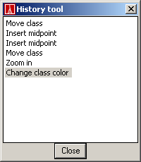

- Click the History tool button.

- The History tool dialog appears with a list of all undoable actions. By clicking on one of the actions, the diagram returns to the state it was in just after you performed this action.

Almost all actions in the diagram tool are undoable. Every action that can be undone, can also be redone. For advanced undoing, open the history tool.
Tip: undo actions cannot be undone. Use redo to undo an undo action.
Note: when an action is performed that cannot be undone, the history tool is emptied.